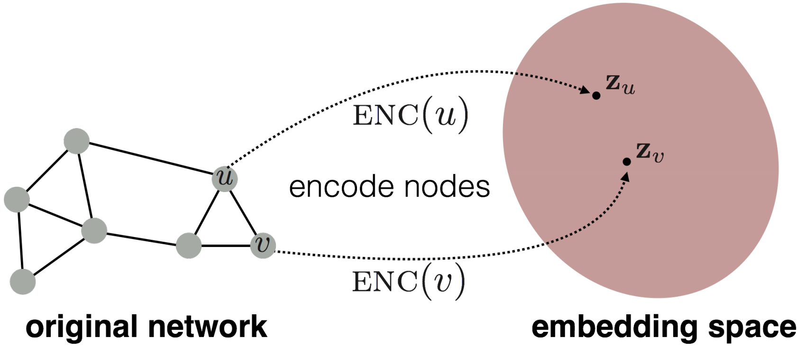

图机器学习2：节点嵌入Node Embedding
节点嵌入 Node Embedding
- 图表示学习的目标是提供一个统一的图特征提取方式，对于不同的图机器学习任务都可以使用，而节点嵌入就是指将图中的节点映射到嵌入空间中，用一个稠密的向量来表示不同的节点，而向量的相似度又决定了节点在图中的相似度，也就是说将整个网络进行了编码。
编码器和解码器
节点嵌入的目标就是对节点进行编码并映射到嵌入空间中，使得两个节点在嵌入空间中的相似度近似于节点在图中的相似度，而相似度和嵌入向量的形式都是需要定义的
- 因此节点嵌入的两个关键的组件就是编码器和相似度函数

浅编码Shallow Encoder
最简单的编码器的形式就是一个简单的嵌入映射，即将节点通过矩阵运算直接转化成对应的嵌入向量，可以表示为：
- 其中Z就是一个
维度的矩阵，存储了每个节点的d维嵌入向量，而v就是一个0-1向量，除了对应的节点那一列是1以外都是0 - 我们需要学习的就是Z矩阵，这种编码器下面每个节点都映射到一个单独的嵌入向量中
随机游走Random Walk
什么是随机游走
随机游走是一种用来定义图节点相似度的方法，
随机游走的过程即每次随机选择当前节点的一个邻居并“走”到这个邻居的位置上不断重复的过程，这个过程中将产生一个随机的节点序列，称为图的随机游走。而用随机游走定义的相似度就是u和v出现在同一个随机游走中的概率。这种方式计算相似度需要以下几个步骤：
- 使用一定的决策策略R来计算从u出发的随机游走经过v的概率
- 根据随机游走的结果优化嵌入函数并进行编码
为什么需要随机游走
- 可表达性：随机游走是一种灵活并且随机的相似度定义，并且包含了局部信息和更高阶的图中节点关系
- 高效性：不需要在训练的过程中考虑所有的节点对，只需要考虑在随机游走中出现的节点对
- 随机游走是一种无监督的特征学习
随机游走的优化
随机游走的目标是让学习到的嵌入向量中，相近的向量在图中更接近，对于一个节点u可以定义它在某种选择策略R下的随机游走中发现的邻居节点构成的集合是
即对于给定的节点u，我们希望通过随机游走中的表现来学习其特征的表示，而虽有游走可以进行一系列的优化，包括：
- 进行一个较短的固定长度的随机游走
- 对于每个节点u的邻居节点，允许邻居节点集合中出现重复的节点，出现的越多表明相似度越高,因此最大化上述目标函数可以等价于最小化下面的表达式：
而概率
但是用上述办法来计算目标函数的话复杂度是非常高的，，可以采用负采样的方式来近似计算损失函数，这里用到了sigmoid函数来近似计算：
这种近似方法不计算全部节点而是只采样了K个随机的负样本，并且用sigmoid函数来近似指数运算，这里的k个negative nodes按照其度数成正比的概率进行选取
在得到了目标函数的近似形式之后，我们可以采用随机梯度下降法来对目标函数进行优化，定义
对于一个节点i，和所有的节点j，计算其导数
更新每一个向量j直到收敛
node2vec
现在的问题就变成了如何确定随机游走的策略，上面已经提到的策略有固定长度，没有偏见的选择策略，而node2vec是一种有偏见的随机游走策略，这种策略更加灵活并且达到了局部和全局的平衡
- 常见的采样邻近节点的方式有BFS和DFS，而BFS更注重局部的邻居结构，DFS则更偏向于全局
有偏见的随机游走
有偏见的定长随机游走策略R有两个参数，一个是返回参数p，代表了返回到前一个节点，另一个参数是出入(in-out)参数q，代表了随机游走过程中的BFS和DFS的比例
- 有偏见的随机游走需要记录当前的游走路径是从那里来的，在参数p中表示
- 每次走到新的节点的时候计算邻近节点的权重，选择权重最高(这里的权重其实也就是代表了走到这个节点的概率，当然是没有标准化的概率)的节点作为游走的下一个目的地
node2vec算法框架
- 计算随机游走的概率分布
- 对每个节点u，找到r条从u出发的不同的长度为l的随机游走
- 使用随机梯度下降法来优化node2vec
总结
- 这里其实还没太搞懂node2vec的真正含义，应该有时间去阅读一下提出node2vec的论文，虽然我觉得大概率没什么时间
- node2vec拥有线性的时间复杂度，并且上述算法框架中的三个步骤是可以并行的
图嵌入
- 图嵌入是将整张图或者子图映射到嵌入空间中，用一个向量来表示
两种简单的approach
- 方法1:将图嵌入等价于图中所有节点的嵌入向量之和
- 方法2:在途中引入一个虚拟节点代表整个图(子图)并进行嵌入
- 方法3:匿名游走嵌入
- 想法1:对匿名游走进行采样并且用每种匿名游走的发生次数来表示一个图，也就是说用这些随机游走发生的概率来表示整张图，选定一个长度L之后，建立一个向量代表所有长度为L的随机游走发生的概率来代表这张图
- 想法2:将匿名游走的嵌入结果进行合并